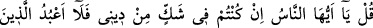
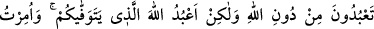
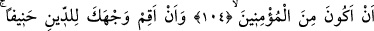
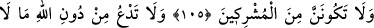
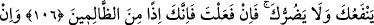
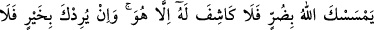
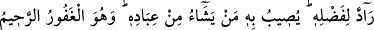
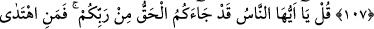
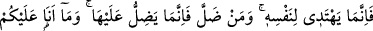
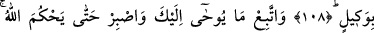
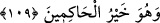

ALLAH’TAN BAŞKASINA YALVARMA
104. De ki: “Ey insanlar, benim dinimden şüphede iseniz, ben sizin Allah’tan
başka taptıklarınıza tapmam. Ben ancak sizi öldürecek olan Allah’a taparım. Bana,
mü’minlerden olmam emredilmiştir.”
105. Ve: “Yüzünü hanîf olan dine çevir. Sakın ortak koşanlardan olma.”
106. “Allah’tan başka, sana ne fayda ne de zarar verecek olan şeylere yalvarma.
Eğer böyle yaparsan, muhakkak zâlimlerden olursun.”
107. Eğer Allah sana bir zarar dokundurursa, onu yine O’ndan başka kaldıracak
yoktur. Ve eğer sana bir hayır dilerse, O’nun keremini de geri çevirecek yoktur. O,
hayrını kullarından dilediğine verir. O çok bağışlayan, çok esirgeyendir.
108. De ki: “Ey insanlar, işte size Rabb’inizden hak geldi. Artık doğru yola gelen
kendisi için gelir, sapan da kendi zararına sapar. Ben sizin üzerinize vekil değilim.”
109. Sana vahyolunana uy ve Allah hükmünü verinceye kadar sabret. O hüküm
verenlerin en hayırlısıdır.
“De ki: “Ey insanlar” Bu hitap, Mekkeliler’edir. “benim” kendisiyle Allah’a kulluk
ettiğim, sizi kendisine çağırdığım, mâhiyetini ve özelliklerini bilmediğiniz “dinimden
şüphede iseniz, ben sizin Allah’tan başka taptıklarınıza” hiçbir zaman “tapmam. Ben
ancak sizi öldürecek” melek vasıtasıyla rûhlarınızı kabzedecek, sonra da türlü türlü